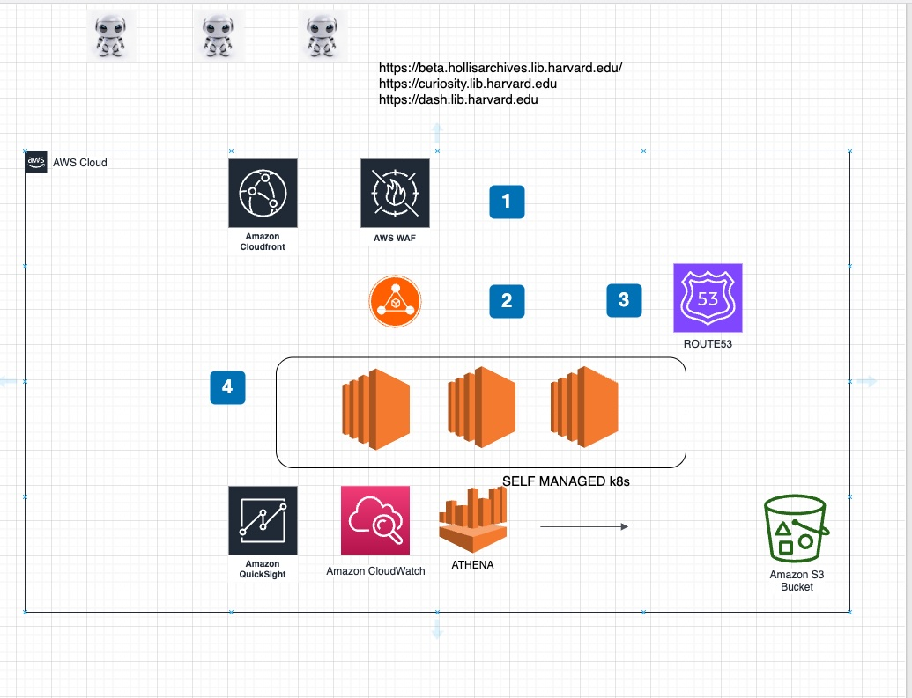

Securing and Accelerating Web Applications
Presenter: [Your Name]
Date: [Presentation Date]
Company/Organization: [Your Organization]
Presenter: [Your Name]
Date: [Presentation Date]
Company/Organization: [Your Organization]

| Component | Price |
|---|---|
| Web ACLs | $5/month per ACL |
| Rules | $1/month per rule |
| Requests | $0.60 per million requests |
Contact Information: [Your Email]
Resources:
AWS WAF Documentation
AWS CloudFront Guide
GitHub AWS Samples Repository